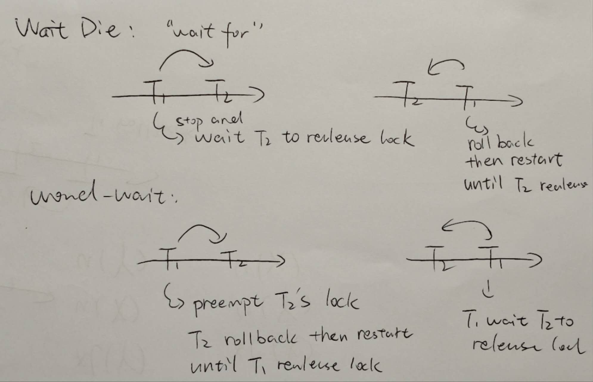

Database development
SQL

Transaction control
Transaction and Schedule
-
Q1
- Note, short hand notation only cares write and read operation, and ignores calculations. So two identical short hand schedule may have different result.


- Note, short hand notation only cares write and read operation, and ignores calculations. So two identical short hand schedule may have different result.
-
Equivalent
Conflict equivalence focus on Order of conflicting operations. Two schedules are conflict-equivalent if:- They involve the same set of transactions.
- They have the same operations in the same order for conflicting operations (read-write, write-read, write-write on the same data item).
-
Serializable
- Best by represent precedence graph, and find the path
- 2PL guarantees serializable. While normal locks don't.
- Ex. S: r1(X); w1(X); r2(Y); w3(Z); r3(X); c3; c1; r2(Z); c2;
Is NOT serial. It is not one txn after another
ACID
-
Q1
- Pay attention to "read" or "write" operation. -- "check" or "update"
- By default consider all update operations are reflected to non-volatile memory
- Durability: Durability consider whether a update that considered as committed (by schedule or by log file) is missing.
i.e. If the system commits a transaction but does not actually write the data (or logs) to non-volatile storage, then a power loss or crash could erase the changes. This breaks durability because the transaction’s changes are not permanently saved.
Since in the question all updates (even half-executed) are saved to non-volatile memory (which breaks atomicity), durability is not violated.
-
What Ensures ACID?
-
Isolation ensures that intermediate states of a transaction are not visible to other transactions. (Serial guarantees isolation)
- Locks
- MVCC
-
Atomicity ensures that a transaction is all-or-nothing. Either all its operations are completed, or none of them are.
- Undo Logging
- Undo/Redo logging
-
Durability ensures that once a transaction commits, its changes are permanent, even in the event of a system crash.
- Logging
- Checkpoint
- Redo logging
- Un/re logging
Logging protocol
-
Q1
- Undo/Redo logging -- both D & A
- Force -- Durability, all committed updates are forces to reflected in non-volatile
- No Steal -- Atomicity, NO STEAL policy ensures that dirty pages (pages modified by uncommitted transactions aka. half-done updates) are not written to disk before the transaction commits.
-
Q2
- I think he is bullshitting.
- 找补: The file structure is identical, so it is possible to recover a redo log file under undo protocol.
-
Q3
- You can't apply redo or undo protocol on undo/redo log file since the data structure is not compatible.

- You can't apply redo or undo protocol on undo/redo log file since the data structure is not compatible.
-
Q4
- The expected starting log index satisfy:
(1) CHECKPOINT & END CHECKPOINT both occurs after it
(2) It is a Start log or the first line
(3) It is the start log of the first uncommitted checking txn
- The expected starting log index satisfy:
-
Checkpoint
- Can be used to make the size of log file smaller
- ARIES checkpoint does not necessarily slower than simple checkpoints

Recoverability (safety)
This part consider about recoverability, focusing on operation to one shared item, and have nothing to do with serializable.
| Property | Key Condition | Implication |
|---|---|---|
| Recoverable (RC) | A transaction that has read uncommitted data must commit after the writer commits. | Prevents the committed transaction from depending on a later-aborted transaction. |
| Cascadeless (CC) | No transaction reads uncommitted data (i.e., reads only committed values aka dirty read). | Prevents “cascading” aborts; also implies RC (recoverable). |
| Strict (ST) | No transaction reads or writes data written by an uncommitted transaction. | Strongest condition; implies CC (and thus RC). Simplifies recovery by avoiding any use of uncommitted data. |
- Strict 2PL: All exclusive (write) locks are held by a transaction until that transaction commits or aborts.
- Strict 2PL ensures strict schedule, but basic 2PL doesn't.
- Strict 2PL doesn't ensure serial. Since 2PL focus on Isolation when two txn touch one item.
You can have interleaved txns touching different items - Strict >> Cascadeless >> Recoverable
-
Strict >> Serializable, serializable + unlock after commit => strict
-
Example:
- not recoverable: w1(X) r2(X) c2 c1
(c1 might abort, thus T2 is depending on later aborted T1) - recoverable: w1(X) w2(X) r2(X) c2 c1.
Since what T2 read is previously modified by itself. In other word, T2 doesn't depend on T1 - cascading: w1(X) r2(X) c1 c2.
Aborting T1 should roll back T2 as well since T2 depends on T1 - cascadeless: w1(X) w2(X) c1 c2.
Aborting T1 will not affect T2, since T2 doesn't depend on T1 - recoverable but not serializable: w2(X) w1(X) r2(X) c1 c2
(cyclic precedence graph) - Serializable but not recoverable: w1(X) r2(X) w2(X) c2 c1
(equivalent to T2 -> T1, X is written by T1) - Deadlock can happen in strict schedule.
Strict schedule and strict 2PL describe how to ensure isolation. Deadlock describe how to assign two txns to schedule. i.e. A partial schedule is strict yet has a deadlock.
- not recoverable: w1(X) r2(X) c2 c1
-
Question
Deadlock May happen in recoverable schedule
T1: w1(X) w1(Y)
T2: w2(Y) w2(X)
Partial schedule that lead to deadlock: w1(X) w2(Y) __ __ c1 c2 2PL lock schedule also may occur deadlock: w1(X) w2(Y) __ __
In other word, follow (strict-)2PL doesn't mean deadlock-free
Prevent deadlock: Timestamp-bases protocols (i.e. wound-wait), time out protocols
-
Additional question

-
Question
No conflict mean not possible for different txns to read same item, therefore no read dirty page, all strict schedule

-
Question
Serializable and strict
I think Strict guarantees Serializability,
since is you don't read or write uncommitted data, you naturally have all conflict operation pairs in same order.
Timestamp
-
Deadlock detection:
- Wait-for graph
- Timestamp based:
- Time-out scheme
- Wait-die scheme (both detect & prevent)
- Wound-wait scheme (both detect & prevent)
-
Timestamp helps Detecting deadlock and let scheduler abort some txn (same timestamp)
This is related to lock and dependencies.- Wait-Die: If older waits for younger, older wait. If younger wait for older, younger roll back and abort (not allowed) (restart with same timestamp).
- Wound-Wait: If older wait for younger, older preempts younger txn, younger roll back. If younger wait for older, younger wait.

-
Timestamp to prevent dead lock (new timestamp)
This only cares about timestamp- Prevent (abort and restart) read request of an item if it is written in the future
- Prevent (abort and restart) write request of an item if it is read or written in the future
-
Timestamp-based scheduling
- Pro:
- Enforce conflict-schedule (N.B. 2PL ensure serializability)
- Prevent deadlock
-
Con:
- Cascading roll backs
- Starvation may occur (cyclic aborts and restart). Starvation can be prevent.
-
Timestamp based schedule may not ensure strict schedule.
- Additional condition: Delay all read and write requests until the youngest transaction who wrote the item has committed
- Pro:
-
Q1: TODO


-
MVCC:
- Each txn keeps a copy of dirty page
- Grant all read request to txns
- Grand write request only if items is NOT read in the future, otherwise abort and restart
- There is also a strict variant, where you delay reads until the transaction you read from commits
Query Processing
Therefore, every relational algebra operation removes duplicates.
Q1
Relational Algebra
- selection
- projection
- Cartesian product
- rename
- Natural Join \(\bowtie\)
Select * from R1, R2
- Equi join \(\bowtie_{\text{ID} = \text{StudentID}}\)
- Equijoin is a type of join where the condition uses equality (=) between columns from two tables.
Select * from R1 join R2 on ID = StudentID
- Semi Join \(\ltimes_{\text{condition}}\)
- A semijoin only includes tuples from the first relation that have matching tuples in the second relation , based on a specified condition
Selection (natural join (R1,R2)) = Natural join (selection (R1), section (R2))
Naive join
Iterate through every line in R1 and find the same values for all common attribute in R2.
Running time: \(O(|R1|*|R2|)\)
Faster Join
Merging
Goal: Compute R⋈_{A=B}S (no duplicates in join column) Method: Sort R and S, then only iterate once. Running time: \(O(|R|+|S|+size of output) + O(|R|log|R|)+O(|S|log|S|)\)
Index
Given the value for one or more attributes of the a relation, Provide quick access to tuples with these values.
Types:
- Primary: A primary index is directly related to the primary key of a table. It is created automatically when a primary key is defined in the table.
- Secondary: A secondary index is an additional index created on columns that are not part of the primary key. It provides an alternative pathway to retrieve data based on non-primary key attributes.
Hash index are only good for equality while B+ trees are also good for ranges. Greater or Less invoke B+-, equal invoke both hash table and B+-
Optimizing query plan
The key is to rewrite the initial query plan so the intermediate result will be smaller.
- Push selection down to the bottom
- Push projection down to the tree
- Replace section of a Cartesian product with
natural join
Distributed Database
Fragmentation, replication and transparency
Fragmentation - Split database into different parts that can be stored at different nodes - Horizontal fragmentation - Fragment by one or a few attributes (i.e. location), Or other conditions that are easily test - Vertical fragmentation
Users don't see fragments, just the full relations.
Redundancy improves resilience and efficiency (if you have query on Database that stores exactly what you want)
Replication:
- Full replication
- Each fragment is stored at every site (No fragments)
- Faster query answering
- Slow when updates
- No replication
- Crash is catastrophic
- Partial replication
Transparency
There were different levels (types?) of transparency
- Fragmentation transparency.
- Users can access data without knowing whether it is divided (fragmented) across multiple locations.
- Replication transparency.
- Users are unaware of whether multiple copies (replicas) of data exist.
- Backup is a copy of data.

- Location transparency.
- Users or applications can access data without needing to know the physical location of the data
- Naming transparency.
Transaction management in distributed database
Voting!
Transactions in D-DBMS
The central note instructs other note to make transactions. However, If there is a feeling note, Automate will be violated globally.
Distributed commit
2 phase commit protocol
There will be a coordinator. They decide if and will local transaction can commit.
Logging is recorded at each node locally. Message sent and retrieved from other nodes are logged too.
Rule:
- Phase 1: Decide when to commit or abort
- The coordinator send a "PREPARE" request to all participating nodes.
- Each note checks if it can commit the transaction and response yes or no.
- Phase 2: Commit or abort
- If all node vote "yes", The coordinator sends a"COMMIT" Message and all nodes commit the transaction.
- If any node votes "NO", the coordinator sends an "ABORT" message and all node abort
Logging rule:

Query in distributed database
Cost on message transition in high and slow.
So we want to transfer as less data as possible
Semi join
Definition:

Applicable when \(|\pi_\text{common attributes} (S) + |R\ltimes S|\) (S' + R') is smaller that \(|R|\) (transfer R directly)
Q1

Semi-structured data
Semi structured data
Tree-like :
- Leaf node: associated with data
- Inner node: No data associated. Has labelled edges going to other nodes
- Root: each node reachable from root
XML
XML forms a tree-like graph, not allow child with multiple parents
XML file
- Tag (opening & closing)
- element
- i.e.
<keyword> arbitrary text </keyword> - Elements may be nested, nesting must be proper
- Root element is contained by no one
- Case-sensitive
- May be empty, in short notation:
<keyword/>
- i.e.
- Attributes
- Elements can have attributes
- i.e.
<module code='COMP207' title='DBMS'/>-- empty element with 2 attributes - You cannot have
<module code='COMP207','COMP201' title='DBMS'/>-- only one attribute of a given name - When to use attributes or sub-elements:
- Staff ID of lecturer (either OK)
- Email address (not suitable for attr since I have more than one email)
Order
Elements in an XML document ordered as they occurred in the document
Store XML in relational database
- store XML file as attribute
- shred XML attributes, then store each (in shredded form)
- store a schema-independent form
- Each row is an attribute, i.e
(parent, child, datatype, data)
- Each row is an attribute, i.e
- Storing the full XML tree in the database
DTD document type definition
<!ELEMENT bookstore (book+)>
<!ELEMENT book (title, author, price, year?)>
<!ELEMENT title (#PCDATA)>
<!ELEMENT author (#PCDATA)>
<!ELEMENT price (#PCDATA)>
<!ELEMENT year (#PCDATA)>
<!ATTLIST book b_id ID #REQUIRED>
<!ATTLIST book category (fiction | non-fiction | sci-fi | fantasy) #IMPLIED>
ELEMENT
#PCDATAa symbol for text data+one or more*any would ok- '?' zero or one
- otherwise appear only once
ATTLIST
#IMPLIEDoptional#REQUIRED#FIXED- data type
CDATA: character data, textID: data type for id. Allows unique key to be associated with an element. i.e.@b_id="1"or@b_id=1both workIDREF/IDREFS: reference to a ID attr- Enumerated type
Validating
- Well formed: conforms to structural format
- Tested by Non-validating processor
- Only one root
- Branches and leaves no overlap
- Well formed + DTD conformation
- Tested by validating processor
Q1

XPath
XPath allows us to write queries that return a set of values or nodes from an XML document.
The result is returned in document order


- Attribute:
books/book[@id=1]/@category - Axis("where to find"):
books/child::book/@categoryis same as omit child axisbooks/book/attribute::category=book/@categorybooks//title=books/descendant::titlefind alltitleelements down frombooksnode. ps. attributes (@) are not elementancestorfollowing-siblingpreceding-siblingNB. Born of the same motherparentor..selfor.
- Conditions:
=, <, >, <=, >=, !=, and, orbooks/book[@category="novel"]library/book[title="The Invisible Library"]/@published
XQuery
where EVERY $m in $l/teaches satisfies $m/year<2where SOME $m in $l/teaches satisfies $m/year<2- Return more than one element
return <pair>{$s/name}, {$s/id}</pair>
{variable}substituted variable name with real element
- Ordered By
- Group BY:
avg() count() min() max() sum()
- Distinct value
Q1

NoSQL
CAP theorem: We cannot achieve at the same time:
- COnsistency
- Availability
- Partition-tolerance
Approach for noSQL storing
- Key-value pair
- column store
- document store
- graph databases
Key-value pair
Store key-value pair in distributed way.
Replication